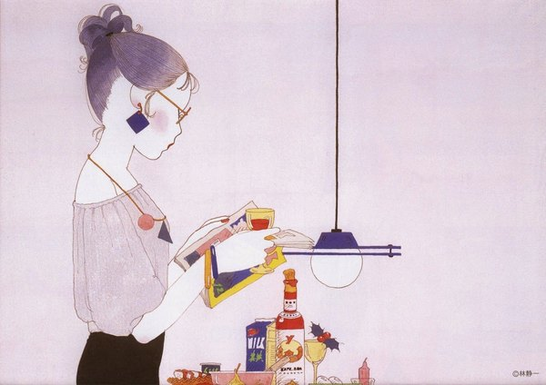
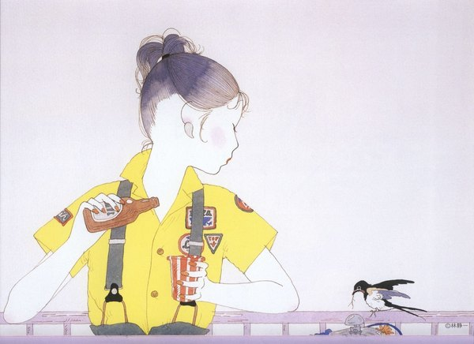
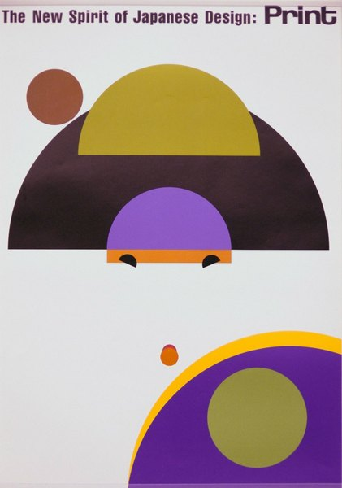
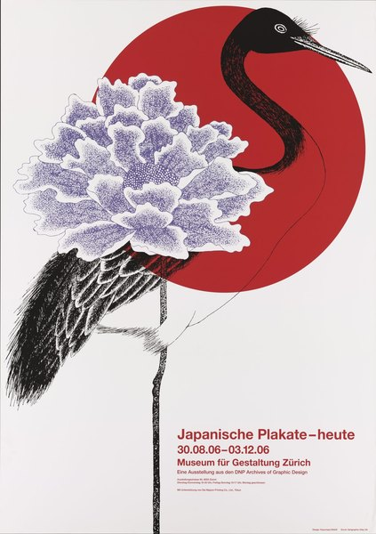
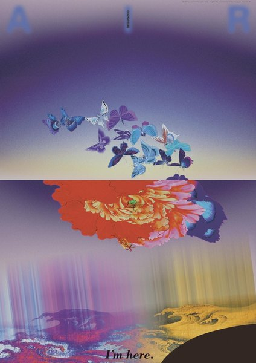
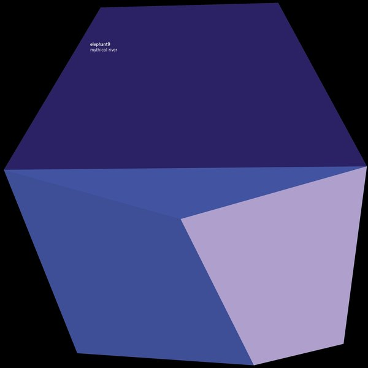
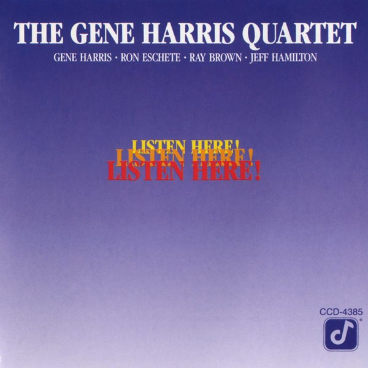

CRVI000007The Black Dog - Spanners
Designed by Black Dog Productions, Richard Burridge, Think 1 · Warp Records · 1995
Designed by Black Dog Productions, Richard Burridge, Think 1 · Warp Records · 1995

CRVI000065Blank Banshee - Blank Banshee 0
Designer unknown · Hologram Bay · 2012
Designer unknown · Hologram Bay · 2012

CRVI000175Third Ear Band - Third Ear Band
Designer unknown · Harvest SHVL773 · 1970
Designer unknown · Harvest SHVL773 · 1970

CRVI000212Unknown - Dance Break
Reaction GIF · Saturday Night Live · 58 frames, 4.6s loop
Reaction GIF · Saturday Night Live · 58 frames, 4.6s loop

CRVI000297King Tubby - The Roots Of Dub
Designer unknown · Total Sounds / Clock Tower Records Inc. · 1976
Designer unknown · Total Sounds / Clock Tower Records Inc. · 1976

CRVI000654Unknown - Coral
Vice, August 2014 Lifestyle · 2014
Vice, August 2014 Lifestyle · 2014

CRVI000860Julian Stanczak - Connecting
145 × 145 cm · 1967
145 × 145 cm · 1967

CRVI001074Kim Laughton - Untitled

CRVI002084Unidentified - Light installation, gallery view

CRVI002657Seiichi Hayashi - Untitled (woman with a lamp and bottles)

CRVI002658Seiichi Hayashi - Untitled (woman in a yellow shirt with swallows)

CRVI002673Ikko Tanaka - The New Spirit of Japanese Design: Print (second colour rendition)
1984
1984

CRVI002682Kazumasa Nagai - Japanische Plakate – heute
2006
2006

CRVI002709Mitsuo Katsui - I'm here (AIR)
1993
1993

CRVI002886Kim Hiorthøy - Elephant9 — Mythical River
2024
2024

CRVI002915Paul Francis - The Gene Harris Quartet — Listen Here!
1989
1989